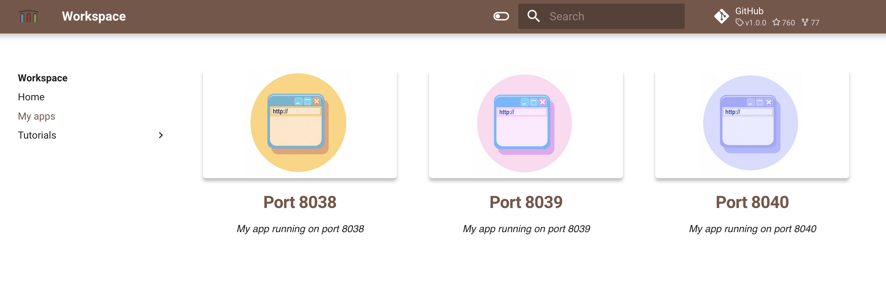

Tutorial
This basic workspace demonstrates how to create simple Hello-world application, install Rails, manage multiple Ruby versions with Rbenv and install dependencies with Bundler.
Ruby
Open terminal, and check Ruby version
ruby -v
Install Rails - a web application development framework written in the Ruby programming language.
gem install rails
Check version
rails --version
Hello world
Open VS-code, and create file http_server.rb
# http_server.rb
require 'socket'
server = TCPServer.new 8040
while session = server.accept
request = session.gets
puts request
session.print "HTTP/1.1 200\r\n" # 1
session.print "Content-Type: text/html\r\n" # 2
session.print "\r\n" # 3
session.print "Hello world! The time is #{Time.now}" #4
session.close
end
Now open terminal, and execute to serve simple server
ruby http_server.rb
Open Quickstart page, go to "My apps" and use port 8040 shortcut to open your web app

Bundler
Bundler provides a consistent environment for Ruby projects by tracking and installing the exact gems and versions that are needed.
Create file Gemfile with the following content
source 'https://rubygems.org'
gem 'nokogiri'
gem 'rack', '~> 2.0.1'
gem 'rspec'
Install all of the required gems
bundle install
Rbenv
Use rbenv to pick a Ruby version for your application and guarantee that your development environment matches production.
List available versions, and install another one
rbenv install --list
rbenv install 3.0.4
Lists all Ruby versions known to rbenv, and shows an asterisk next to the currently active version.
rbenv versions
global environment
Change global Ruby (for all folders)
rbenv global 3.0.4
local environment (specific folder)
Chose local Ruby environment for this specific folder
rbenv local 3.0.4